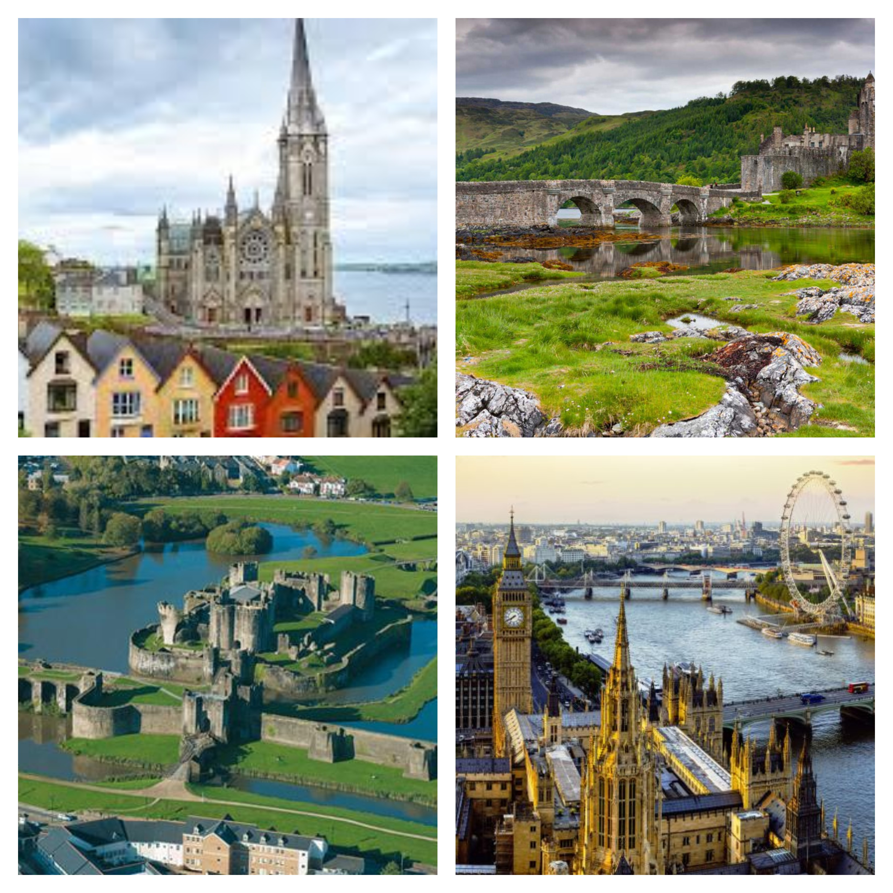
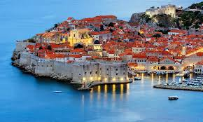
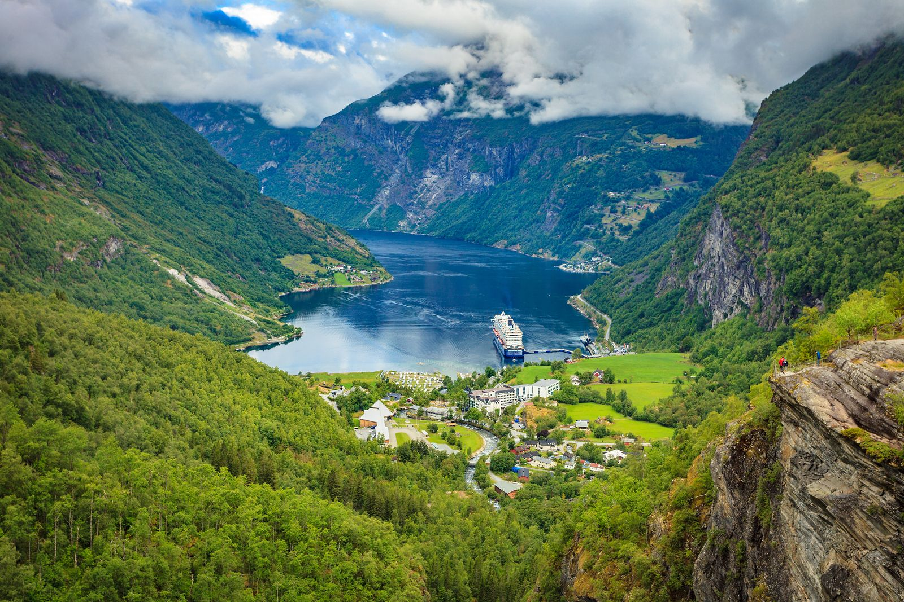
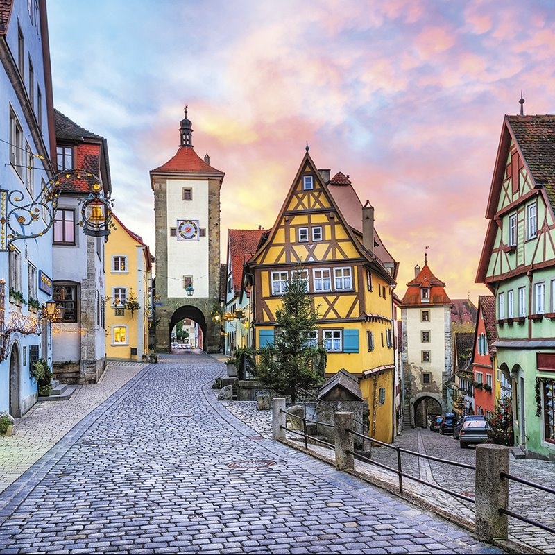
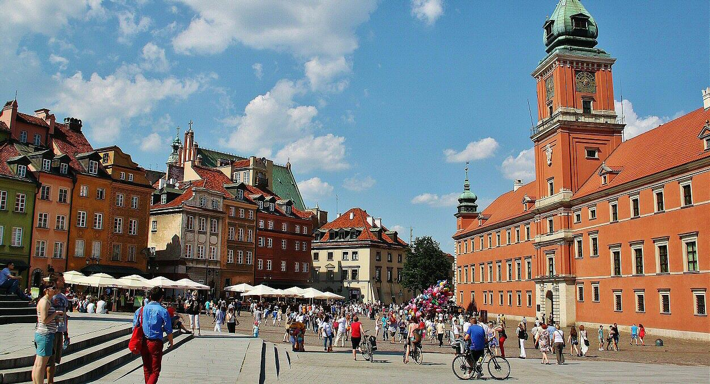
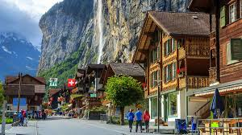
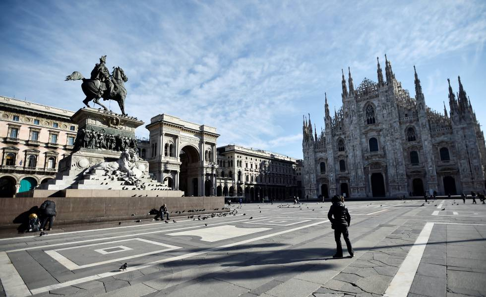

Menu
Reino Unido
Croacia
Noruega
Alemania
Polonia
Suiza
Italia
- Reino Unido
- El Reino Unido es un estado unitario comprendido por cuatro paises constituyentes: Escocia, Gales, Inglaterra e Irlanda del Norte, y es gobernado por un sistema parlamentario con sede de gobierno en Londres, la capital, pero con tres administraciones nacionales descentralizadas en Edimburgo, Cardiff y Belfast, las capitales de Escocia, Gales e Irlanda del Norte respectivamente. El Reino Unido es una monarquia constitucional con la Reina Isabel II del Reino Unido como jefe de Estado. Las Dependencias de la Corona de las Islas del Canal y la Isla de Man no forman parte del Reino Unido, pero si se integran en una federacion con el. El Reino Unido tiene catorce Territorios de Ultramar, todos ellos vestigios de lo que fue el Imperio Britanico, que en su cuspide territorial llego a abarcar cerca de un cuarto de la superficie terrestre del planeta.

Croacia
- Croacia es un pais joven, es un pais de reciente creacion, es un pueblo de origen eslavo cuya historia, hasta finales del siglo XX, ha ido muy ligada a la de la ExYugoslavia.Croacia es un país de Europa Oriental con una larga costa en el mar Adriatico. Incorpora a mas de 1,000 islas y lo cruzan los Alpes Dinaricos. Su capital interior, Zagreb, es conocida por el barrio Gornji Grad (ciudad alta) y sus diversos museos. La principal ciudad costera, Dubrovnik, tiene murallas enormes que datan del siglo XVI y rodean una ciudad antigua con edificios goticos y renacentistas.

- Noruega
- Noruega es un pais escandinavo que incluye montañas, glaciares y profundos fiordos costeros. Oslo, su capital, es una ciudad de areas verdes y museos. En el Museo de barcos vikingos de Oslo, se muestran navios vikingos preservados del siglo IX. Bergen, con coloridas casas de madera, es el punto de partida de los cruceros hacia el sorprendente fiordo de Sogn. Noruega tambien es famosa por la pesca, el excursionismo y el esqui, especialmente en el centro olimpico Lillehammer.

- Alemania
- Alemania es un pais de Europa occidental con un paisaje de bosques, rios, cadenas montañosas y playas en el mar del Norte. Tiene más de 2 milenios de historia. Berlin, su capital, cuenta con sitios de arte y vida nocturna, la Puerta de Brandeburgo y muchos sitios relacionados con la Segunda Guerra Mundial. Munich es conocida por el Oktoberfest y los salones de la cerveza, incluido el Hofbräuhaus del siglo XVI. Fráncfort, con sus rascacielos, alberga el Banco Central Europeo.

- Polonia
- Polonia es un pais de Europa Oriental en el mar Baltico, conocido por su arquitectura medieval y su herencia judia. En la ciudad de Cracovia, el castillo de Wawel del siglo XIV se eleva por sobre la antigua ciudad medieval, donde se encuentra la Lonja de los Paños, un establecimiento comercial renacentista en Rynek Glowny (plaza del mercado). Cerca se encuentra el memorial del campo de concentracion Auschwitz-Birkenau y las vastas minas de sal de Wieliczka, con salas y túneles subterraneos..

- Suiza
- Suiza es un pais montanoso de Europa Central, con varios lagos, aldeas y las altas cimas de los Alpes. Sus ciudades tienen barrios medievales, con monumentos como la torre del reloj Zytlogge en su capital, Berna, y el puente de madera de la capilla en Lucerna. El pais también es famoso por sus centros de esqui y los senderos de excursionismo. Las industrias bancaria y financiera son clave, y los relojes y el chocolate de Suiza son conocidos en todo el mundo.

- Italia
- Italia, pais europeo con una larga costa mediterranea, influyo considerablemente en la cultura y la cocina occidental. Su capital, Roma, es hogar del Vaticano, de ruinas antiguas y de obras de arte emblematicas. Otras ciudades importantes son Florencia, con obras maestras del renacimiento, como el "David" de Miguel Angel y el Domo de Brunelleschi; Venecia, la ciudad de los canales; y Milan, la capital italiana de la moda.
